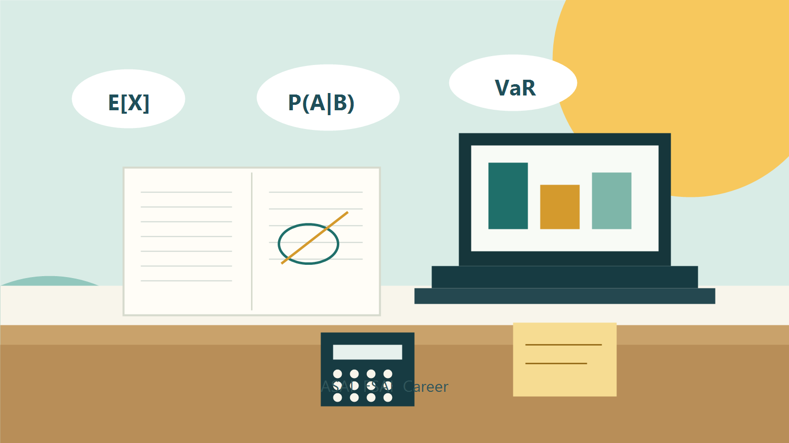

Keilmiahan

HIMASAKTA ITS
Actuarial Learning Center
Bank soal, materi akademik, info lomba, dan peluang magang aktuaria dalam satu tempat.
Recent Post
Update terbaru ALC
Ringkasan konten yang baru ditambahkan atau perlu segera dilihat mahasiswa.
Akses Cepat
Masuk ke kanal utama
Keprofesian